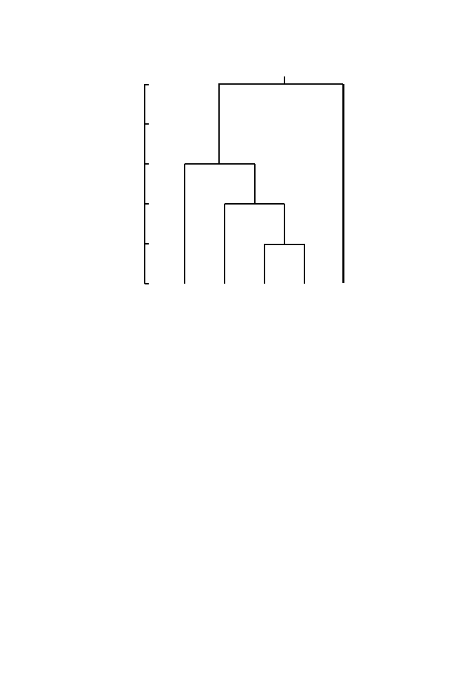

12.3 Parsimony and Distance Methods
351
5
4
2
3
1
6
7
8
9
0.0
0.2
0.4
0.6
0.8
distance
1.0
Fig. 12.5.
Example of an ultrametric tree. The distance from the leaves to node
6 = 0.2, to node 7 = 0.4, to node 8 = 0.6, and to node 9 = 1. Note the equal
lengths of the branches from any node to all leaves derived from that node. This is
a distinguishing feature of ultrametric trees.
The hierarchical clustering method discussed in Chapter 10 is one way
to calculate an ultrametric tree from a set of distances. When the distance
between two clusters is defined by group average linkage (see Section 10.4.1),
the method produces what is called the UPGMA tree (UPGMA meaning
“unweighted pair group method with arithmetic means”). Finding an additive
tree is also an interesting problem, but in practice the distances estimated
from molecular sequence data do not satisfy the conditions of the theorem
and we are left with more work to do. There are several approaches. For an
approximately additive tree, a popular method uses Saitou and Nei’s neighbor
joining method, implemented for example in the software package
MEGA
.
Another approach uses weighted least squares to fit a best additive tree
for which the distances in any tree to be evaluated are denoted by parameters
p
ij
and the observed pairwise distances
d
ij
as before. We find the assignment
of sequences or species to nodes that minimizes the function
E
given by
E
=
i
j
w
ij
|
d
ij
−
p
ij
|
α
,
where
α
typically has the value 1 or 2 and the
w
ij
are weights. Choices of
weights such as
w
ij
= 1
, d
−
1
ij
, or
d
2
ij
are typical. This also allows for missing
data by putting
w
ij
= 0 if there is no distance for pair (
i, j
).